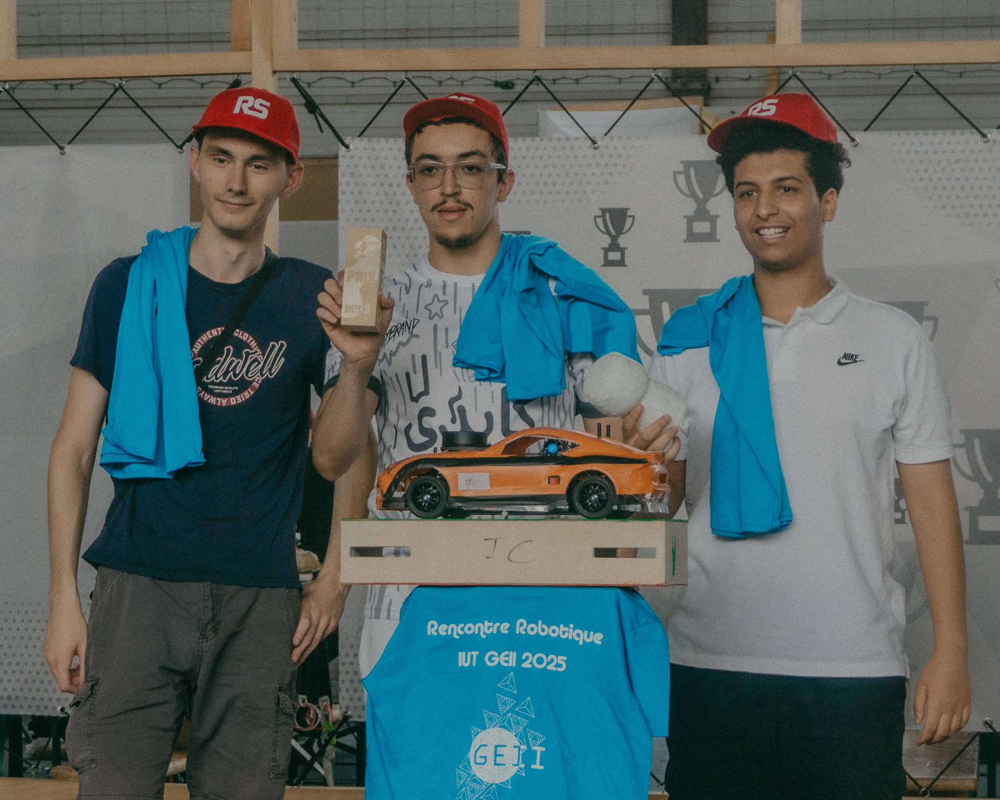
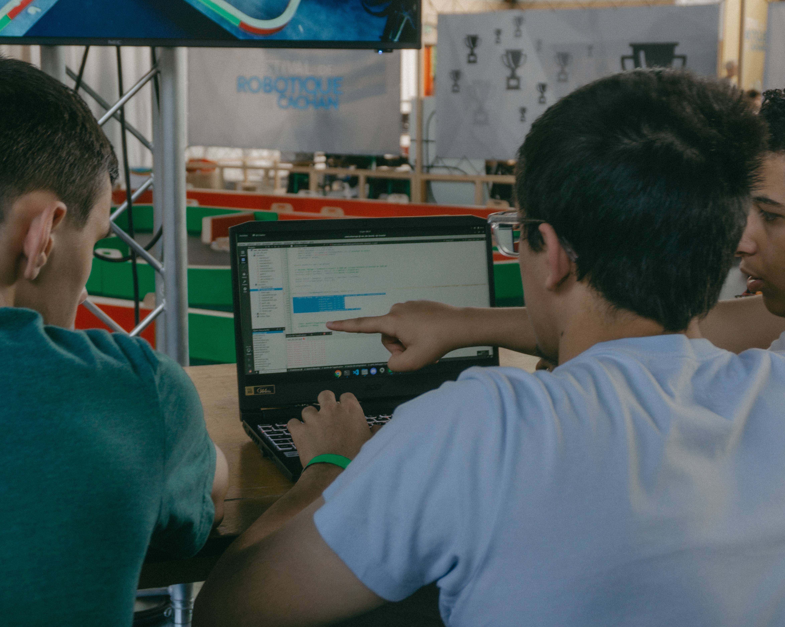
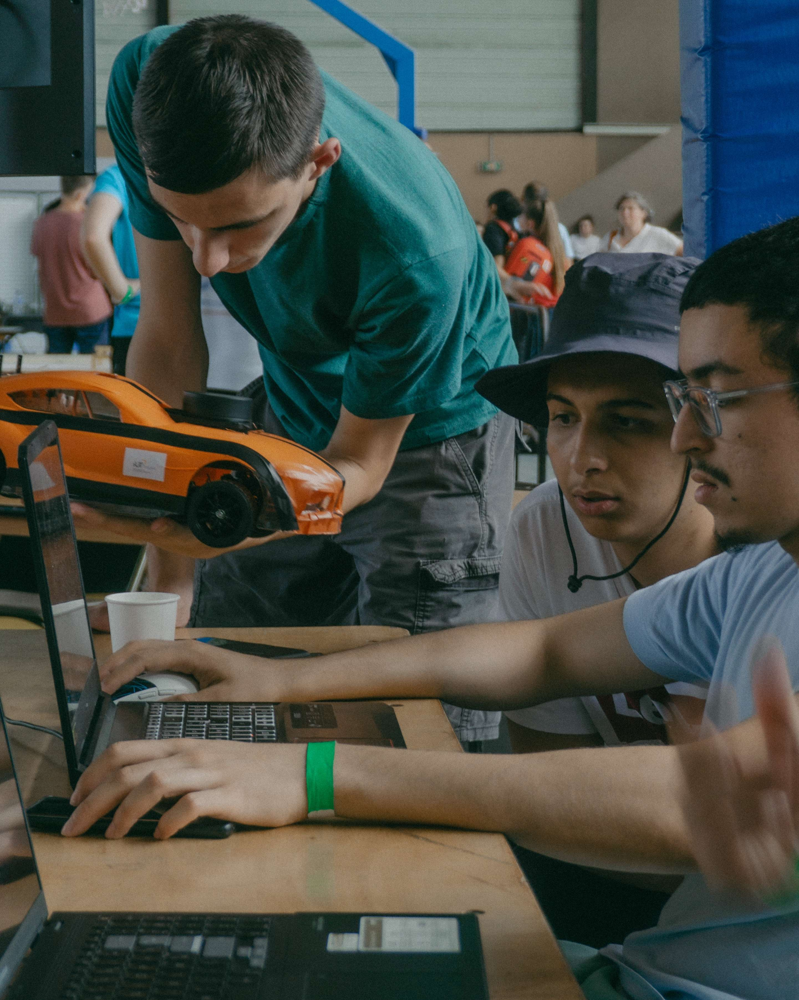
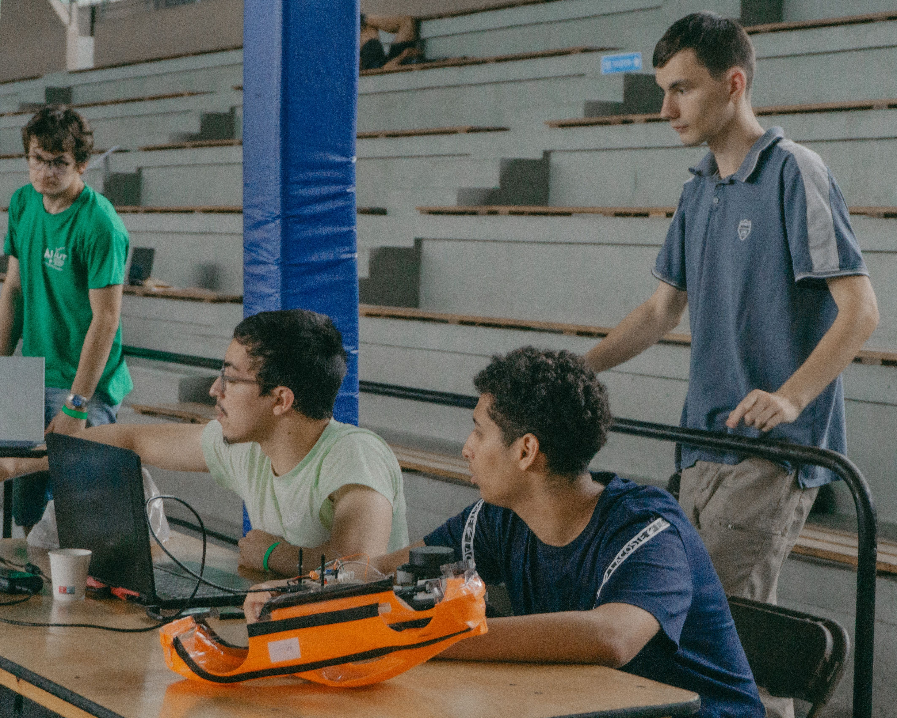
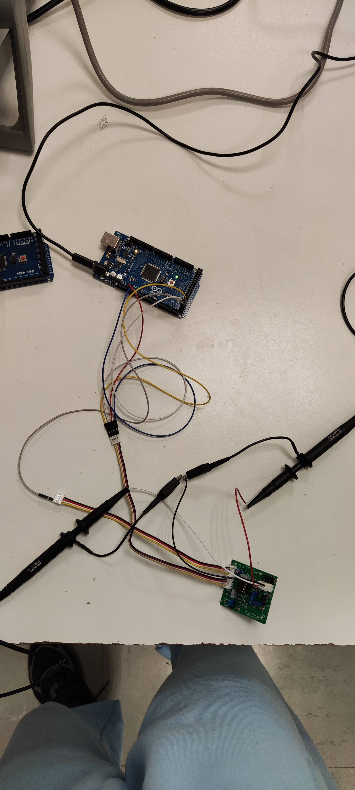
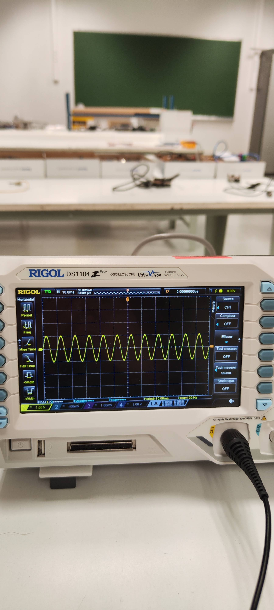
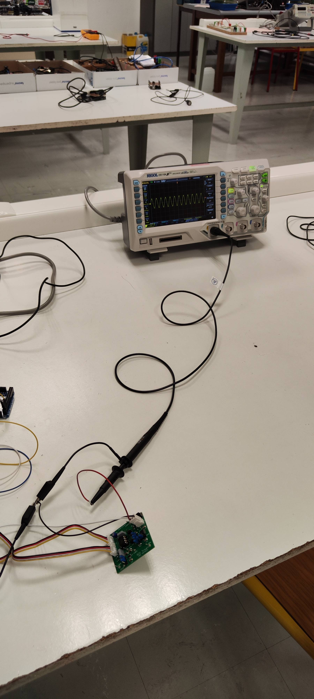

L'entrée dans le parcours Électronique et Systèmes Embarqués : développement logiciel embarqué (C++/Qt, VHDL), instrumentation et mesure, robotique autonome, et un premier stage R&D chez CapSec. Une année qui a confirmé ma voie.
SAÉ 3.1binôme · 🏆 2ᵉ place concours robotique de Cachan
Voiture Autonome
Conception de la partie logicielle d'une voiture capable de naviguer de façon autonome, d'abord en simulation puis en réel. Le projet a combiné programmation orientée objet en C++ et framework Qt, avec l'exploitation d'un capteur LiDAR 360.
En binôme avec M. Samahri (chargé du contrôle et de l'algorithmique de navigation), je me suis concentré sur l'interface utilisateur et la communication client-serveur TCP : piloter la voiture à distance et visualiser les données de navigation en temps réel. Une expérience prolongée par une 2ᵉ place au concours de robotique de Cachan.

// voiture_01

// voiture_02

// voiture_03

// voiture_04// interface_Qt
Concevoir · AC21.01Vérifier · AC22.01Maintenir · AC23.02/03Implanter · AC24.01/02 ESE
SAÉ 3.2Chaîne d'acquisition / restitution
Banc de Test Haut-Parleur
Mesurer et caractériser l'impédance d'un haut-parleur. Le projet a débuté par une approche analogique — banc de test basé sur la corrélation sinusoïdale, avec amplificateurs de courant (source de Howland) et multiplieurs.
Puis transition vers un système entièrement numérique : numérisation des signaux, convertisseurs CAN/CNA, et implémentation d'une FFT pour l'analyse fréquentielle. Un projet exigeant en traitement du signal et instrumentation, mené sous Matlab et Arduino.
// banc_01

// banc_02

// banc_03

// banc_04// banc_05// banc_06
Concevoir · AC21.01 Source de Howland, FFT Vérifier · AC22.01 Protocole de mesure d'impédance Maintenir · AC23.01Implanter · AC24.01 ESE
SAÉ 4.1binôme · contrôle moteur
Commande d'un moteur Brushless — FPGA
Donner vie à un moteur brushless en concevant sa logique de commande en VHDL sur cible FPGA. Le cœur du projet : la génération des signaux tH, tL et PWM pilotant les transistors de la carte de puissance, avec validation progressive des modules.
Un retour incrémental (codeur) assure la mesure et l'affichage de la vitesse. Le débogage VHDL et l'ajustement des signaux ont demandé une démarche rigoureuse de diagnostic et de correction.
Un robot mobile capable d'éviter les obstacles et de détecter une balise cible. Première phase : conception d'un banc de test pour cartes réceptrices infrarouges — génération de fréquences IR via une LED pilotée, alimentation de la carte sous test, et interface Qt Creator communiquant par IP avec oscilloscope et GBF.
Seconde phase : intégration logicielle sur le robot. Ma contribution : la détection des LEDs colorées de la balise avec une caméra Pixy, programmée en C sur Raspberry Pi Pico (sous VS Code), en binôme avec M. Belmeliani.
Concevoir · AC21.01Vérifier · AC22.01 Fréquences IR Maintenir · AC23.02 Débogage C / Qt Implanter · AC24.01 ESE Interface Qt & scripts
Stage · 2ᵉ annéeCapSec (UTT) · janvier — mars 2025
Premier stage — CapSec · Projet ARODE
Mon premier stage chez CapSec, déjà sur le projet ARODE (drone autonome de recherche et sauvetage). Mission centrée sur la chaîne de communication et de transmission vidéo du drone.
J'ai adapté l'application Android au nouveau drone, fluidifié la transmission vidéo et garanti la synchronisation images / localisation. Travail de dérisquage de protocoles (RTMP vs RTSP, WebRTC), configuration réseau (routeur Wi-Fi) et implémentation via le SDK DJI. Une première immersion qui a posé les fondations de mon stage de 3ᵉ année.
Ce premier stage a été prolongé en BUT3 par un second stage de 3 mois chez CapSec, cette fois pour faire passer ARODE du prototype au système opérationnel. Découvrir le stage de 3ᵉ année →
.png)
.jpg)